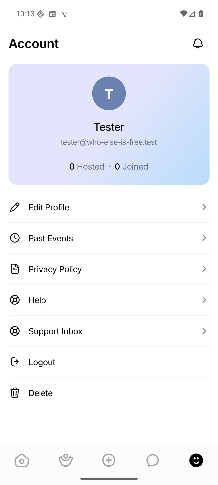
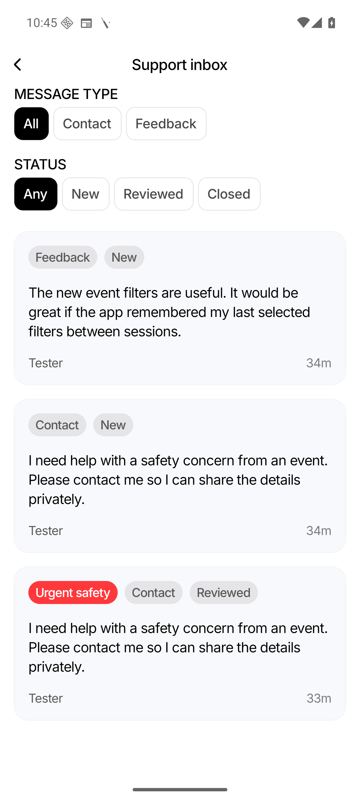
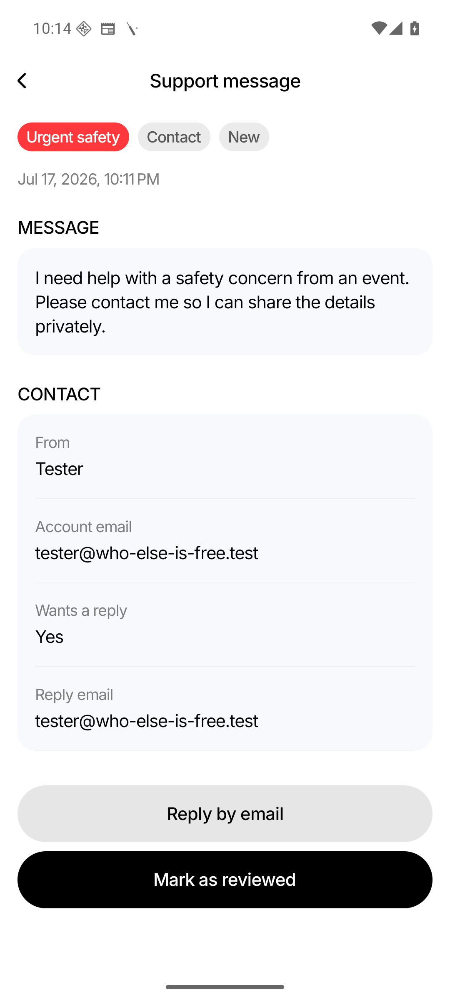
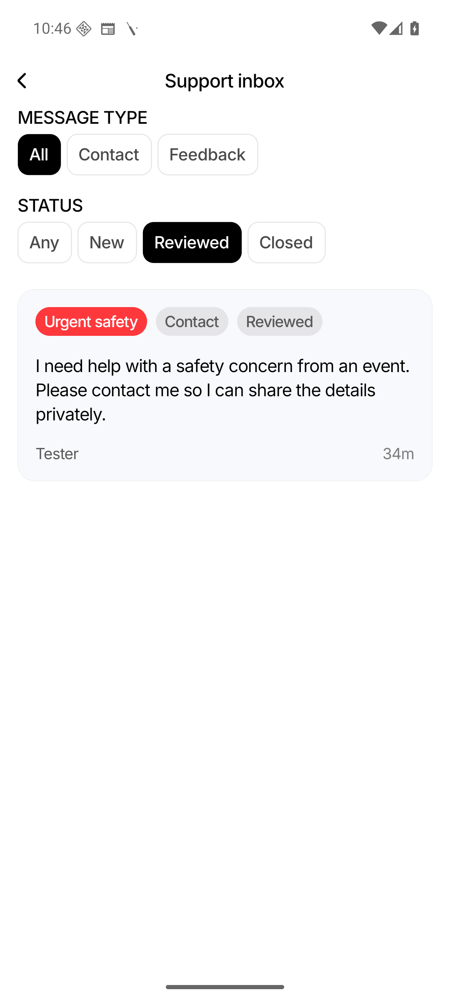

Verified sign-in
Google or Apple establishes the account and immutable user ID.
Who Else Is Free · Implementation Report
A secure, scalable way for approved admins to review Contact Us and Feedback records directly in the app—without sharing database access or trusting an email address at request time.
Admins now have a Profile → Support Inbox entry that lists existing and new Contact Us and Feedback submissions, prioritizes new urgent safety reports, exposes full details and reply information, and supports New, Reviewed, and Closed workflow states.
Admin identity decision
The scalable solution is a persistent admin_users table keyed by the
immutable account users.id. Exact verified account emails in
ADMIN_BOOTSTRAP_EMAILS are used only to create the first grants.
Every runtime request checks the signed-in session’s user ID against the database. A client-supplied email, hidden menu, or shared secret never proves admin access.
The production database remains the source of truth. The mobile client can discover access, but sensitive data is released only after both session and database-role checks.
Google or Apple establishes the account and immutable user ID.
admin_users.user_id stores membership after bootstrap.
Session middleware runs first; admin middleware checks the DB second.
Admins list, filter, inspect, reply, and update status in the app.
All planned phases are implemented. Provider-specific Slack/email alerts remain an explicitly optional future integration and are not required for secure in-app access.
Added schema/repository grants, exact-email bootstrap, session-protected
/api/admin, DB-backed middleware, and a safe access-discovery route.
Added bounded filters, opaque cursor pagination, deterministic urgent/new ordering, nullable submitters, detail reads, and validated status updates.
Added admin-only Profile entry, inbox and detail routes, filters, pagination, refresh/retry states, reply action, and status workflow using shared primitives.
Enforced 4,000-character messages and valid reply addresses, rate-limited anonymous traffic, avoided sensitive logging/analytics, and documented retention and operations.
admin_users
All help-data routes below require a valid session and a persistent admin grant.
GET /api/admin-access requires a session and returns only a boolean.
| Method | Route | Purpose |
|---|---|---|
| GET | /api/admin/help-submissions |
Filtered, cursor-paginated inbox; defaults to 25 records. |
| GET | /api/admin/help-submissions/:id |
Full message, reply metadata, status, and nullable submitter. |
| PUT | /api/admin/help-submissions/:id/status |
Accepts only new, reviewed, or closed.
|
| GET | /api/admin-access |
Lets the signed-in client decide whether to show the Profile entry. |
Captured from the WEIF_API_36 emulator using this worktree’s Metro bundle
and isolated backend. Test content is synthetic.




A valid bearer session whose immutable user ID exists in
admin_users. The check happens on every protected request.
A displayed email, client menu visibility, request body, bootstrap list, shared API key, or direct knowledge of the endpoint.
No session returns 401; signed-in non-admin returns 403; granted admin returns 200.
Submission contents remain in the existing database and protected UI. They are not copied to analytics, push notifications, or default alerts.
go test ./... passed.
npm run typecheck passed.
git diff --check passed.
color/iconBackground
launcher resource. The installed compatible development client loaded the current JS
bundle through Metro, so device verification of this feature is complete.
The code is ready for integration. Production provisioning should follow this order.
Apply the schema and protected routes before releasing the client menu.
Use exact verified account emails in ADMIN_BOOTSTRAP_EMAILS.
Each intended admin signs in; confirm the persistent grant and inbox access.
The DB grants remain; removing the secret closes automatic provisioning.
Verify production 401 / 403 / 200 behavior for anonymous, user, and admin.
Ship the Profile entry, inbox, detail, and workflow after server verification.